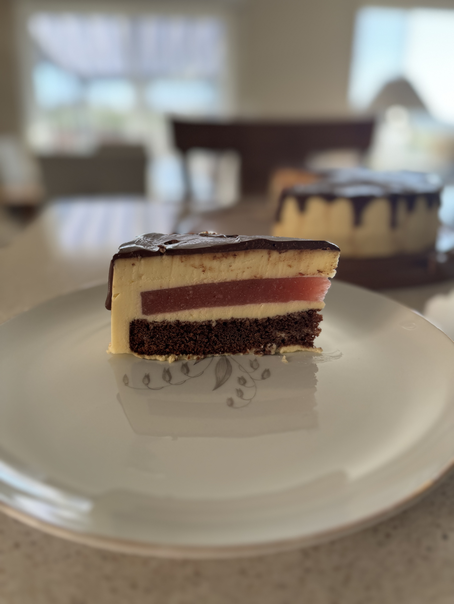

Vanilla Entremet with Strawberry Basil Jelly and Chocolate Ganache
This recipe is adapted from my own cookbook by Hayley Tymony.

Photo by: Hayley Tymony
Rate This Recipe
Conversion
=
Ingredients List
For the Chocolate Cake
1 cup butter, softened
3 cups packed brown sugar
4 large eggs, room temperature
2 teaspoons vanilla extract
2 2/3 cups all-purpose flour
3/4 cup baking cocoa
3 teaspoons baking soda
1/2 teaspoon salt
1 1/3 cups sour cream
1 1/3 cups boiling water
1/3 cup granulated sugar
1 teaspoon vanilla extract
For the Strawberry Basil Jelly
250 g strawberry puree, seedless
12 g gelatin powder
12 g cornstarch
70 ml cold water
63 g sugar
8 fresh basil leaves
For the Vanilla Mousse
480 ml milk
18 g gelatin powder
27 g cornstarch
100 ml water
150 g sugar
360 ml heavy cream
90 g butter
6 medium egg yolks
1 1/2 teaspoons vanilla (or vanilla bean paste)
zest of one lemon
Optional Chocolate Ganache
9 ounces semisweet chocolate, roughly chopped
1 cup heavy cream
2 tablespoon dark rum (Optional)
Equipment List
9 inch silicon cake ring
3 8 inch silicon cake ring
Hand mixer
Measuring cups
Teaspoons
Spatulas
Fine mesh strainer (Optional)
Small sauce pan
Directions
For the Chocolate Cake
Preheat oven to 350°. Grease and flour cake pan.
In a large bowl, cream butter, shortening and sugar until light and fluffy, 5-7 minutes. Add eggs, 1 at a time, beating well after each addition. Combine flour, baking powder and cocoa. Combine milk and vanilla. Add dry ingredients to creamed mixture alternately with milk mixture. Mix well.
Pour into 2 8 inch silicon cake rings. Bake until a toothpick inserted in the center comes out clean, 70-80 minutes.
Cool for 15 minutes before removing from pan to a wire rack to cool completely.
For the Strawberry Basil Jelly
In a small bowl mix gelatin and cold water. Let bloom for 15 minutes.
In a small saucepan mix sugar and cornstarch, add strawberry puree and chopped basil. Bring to a simmer stirring constantly, until thickens. Remove from heat. add the bloomed gelatin and stir until the gelatin has dissolved. Let cool to room temperature.
Pour the mixture into the a 8 inch silicon cake ring. Freeze until ready for assembly.
For the Vanilla Mousse
In a small bowl mix gelatin and cold water. Let bloom for 15 minutes.
In a small saucepan heat milk with lemon zest and vanilla extract, do not boil. Set aside.
In a larger saucepan add sugar, cornstarch and mix. Add egg yolks and mix well. Gradually add the warm milk through a sieve and whisk constantly. Heat the mixture over low-medium heat, whisking constantly, until thickens. Remove from heat, add butter, stir until incorporated. Add the bloomed gelatin and stir until the gelatin has dissolved. Cover with plastic wrap and let cool to room temperature.
Whip heavy cream to soft peaks, add the milk mixture unto the whipped cream and gently stir until combined.
Optional Chocolate Ganache
Place chocolate in a medium, heat safe mixing bowl.
Heat cream in a small saucepan over medium heat. Bring just to a boil, watching very carefully because if it boils for even a few seconds, it will boil out of the pot.
As soon as the cream comes to a boil, pour it over the chocolate in the mixing bowl. Whisk until chocolate has melted and mixture is smooth, then stir in rum.
Cool for about 5 to 10 minutes. Then pour directly onto the entremet starting at the center and work outward.
Assembly
Pour half of the mousse in a 9 inch silicon cake ring, shake and spread evenly along the bottom and slightly up the sides, freeze for 5 minutes, then gently place strawberry jelly in the center.
Pour about a quarter of the remaining mousse on top of the jelly, leaving room on top for the cake and spread evenly. Make sure you cover all the space around the confiture layer. Place back in the freezer for 5 minutes.
Place the cake layer on top, gently press. Fill in any empty spaces on the sides with the remaining mousse and spread any extra mousse from the sides over the cake to make sure it's flat. Cover with plastic wrap and freeze for at least 8 hours.
About an hour before serving, remove the cake from the freezer and carefully peel the silicon from the cake. You want to make sure you have enough time for the cake to thaw before serving.